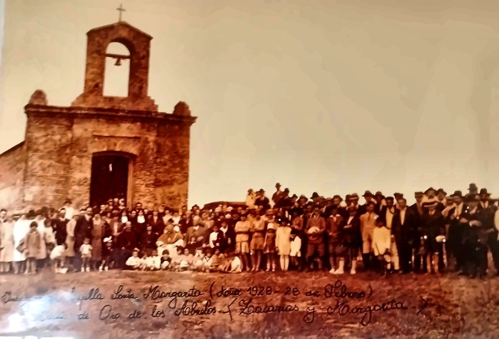
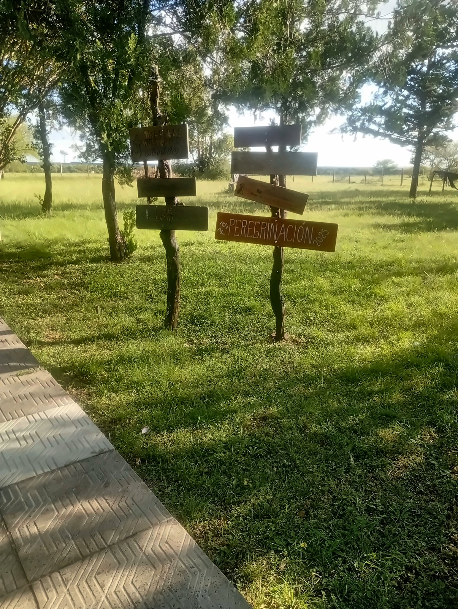

Patrimonio del pueblo
La Capilla Santa Margarita está en Javier de Viana, sobre la Ruta 30, en el kilómetro 96. Es una parte muy importante del patrimonio histórico, cultural y religioso de la localidad.
Su valor se destaca por su arquitectura, por sus años de historia y por el significado que tiene para la comunidad.
Un espacio de encuentro y fe
En la capilla se realizan misas, bautismos, celebraciones religiosas y actividades de catequesis.
Visitas
- Para visitarla, coordiná antes con la catequista Aracelia Martínez, encargada de contacto, al 098 651 246.
- Está a unos 28 kilómetros de la ciudad de Artigas.
Fotos

Foto: Foto histórica, fotografiada por el CEI Javier de Viana

Foto: CEI Javier de Viana